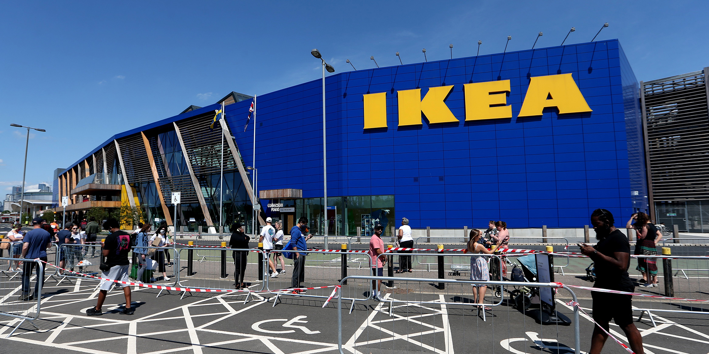
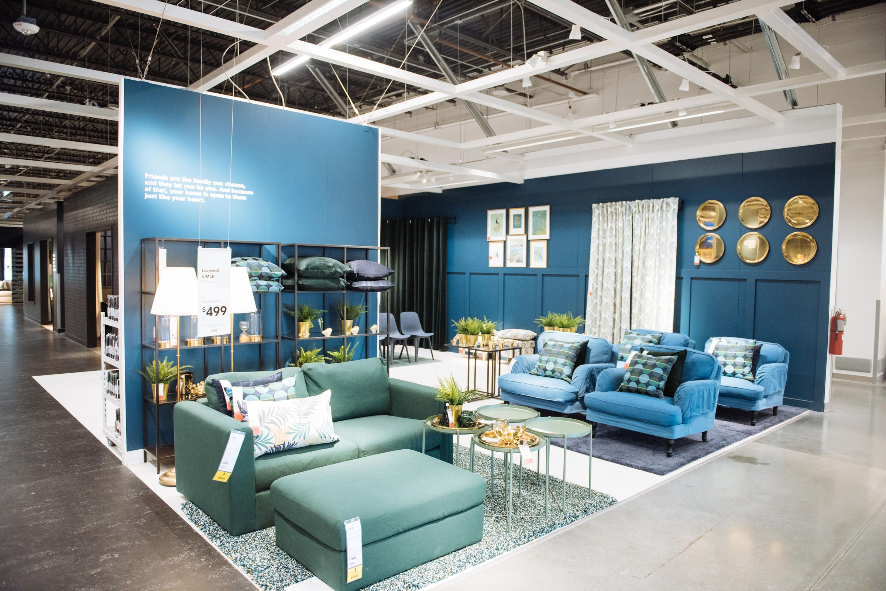
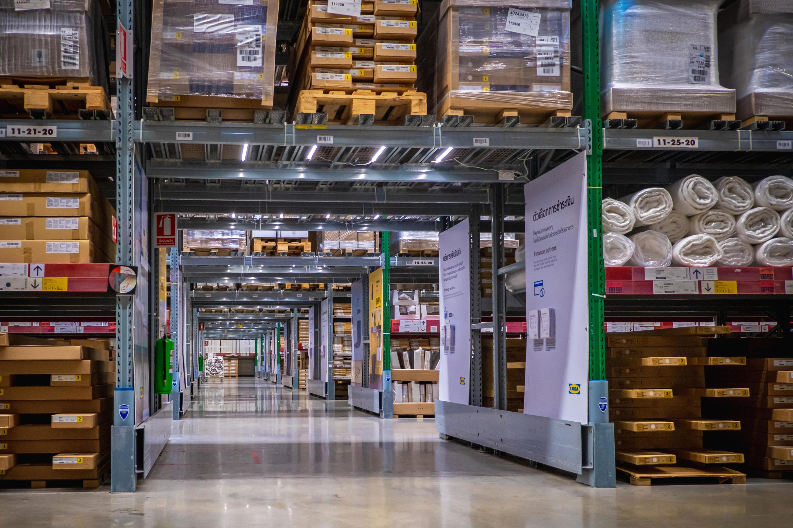

STORES
- 
IKEA Store Exterior
- 
IKEA Store Showroom
- 
IKEA Store Warehouse

IKEA Store Marketplace
IKEA stores are typically blue buildings with yellow accents (also Sweden's national colours). They are often designed in a one-way layout, leading customers counter-clockwise along what IKEA calls "the long natural way" designed to encourage the customer to see the store in its entirety (as opposed to a traditional retail store, which allows a customer to go directly to the section where the desired goods and services are displayed). There are often shortcuts to other parts of the showroom.
The sequence first involves going through the furniture showrooms making note of selected items. The customer collects a shopping cart and proceeds to an open-shelf "Market Hall" warehouse for smaller items, visits the self-service furniture warehouse to collect previously noted showroom products in flat pack form. Sometimes, they are directed to collect products from an external warehouse on the same site or at a site nearby after purchase. Finally, customers pay for their products at a cash register. Not all furniture is stocked at the store level, such as particular sofa colours needing to be shipped from a warehouse to the customer's home or the store.
Most stores follow the layout of having the showroom upstairs with the marketplace and self-service warehouse downstairs. Some stores are single level, while others have separate warehouses to allow more stock to be kept on-site. Single-level stores are found predominantly in areas where the cost of land would be less than the cost of building a 2-level store. Some stores have dual-level warehouses with machine-controlled silos to allow large quantities of stock to be accessed throughout the selling day.
Most IKEA stores offer an "as-is" area at the end of the warehouse, just before the cash registers. Returned, damaged, and formerly showcased products are displayed here and sold with a significant discount, but also with a no-returns policy.